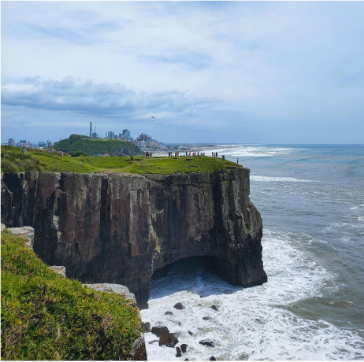
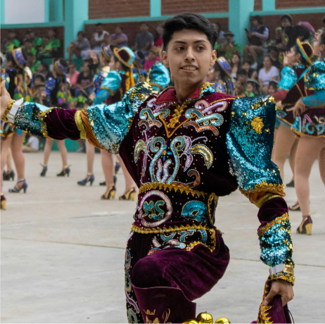

Roteiros: tipologias, planejamento e formas de apresentação e precificação
Para que você possa planejar roteiros turísticos adequados ao perfil do turista, é preciso conhecer algumas terminologias. Os roteiros turísticos têm características diversas, e a combinação desses elementos determinará como identificar as principais tipologias de roteiros e assim organizar o planejamento do trabalho do guia de turismo.
Neste material, serão exploradas as principais tipologias de roteiros conforme o fluxo de turistas, os diversos formatos de roteiros que influenciam diretamente o tipo de experiência oferecida, destacando a importância de um planejamento focado na estruturação do roteiro, de acordo com suas especificidades. Serão abordadas estratégias para o planejamento de roteiros e todos os elementos que fazem parte dessa construção, como a seleção dos atrativos, acomodações, infraestrutura de apoio, formas de apresentação e precificação dos seus serviços. Este conteúdo será fundamental para que você possa preparar experiências únicas e bem organizadas, desde a concepção de roteiros personalizados até o planejamento de suas atividades, garantindo que você ofereça aos turistas uma experiência atrativa, adaptada aos diferentes tipos de roteiro e desafios do mercado de trabalho.
Tipologias
Um roteiro turístico bem elaborado é a base para uma experiência de qualidade, fundamental para o profissional que deseja oferecer guiamentos que otimizem a experiência do turista e lhe traga uma boa leitura do destino e cultura local. Para elucidar esse tema, é necessário abordar alguns conceitos que definem o roteiro turístico: Tavares (2002, p.15) afirma que “os roteiros turísticos são uma das principais formas de contextualizar os atrativos existentes em uma localidade e, consequentemente, de potencializar seu poder de atratividade”. Complementando, o MTur (BRASIL, 2010. p.13) assim define “podemos entender o roteiro turístico como um itinerário caracterizado por um ou mais elementos que lhe conferem identidade, definido e estruturada para fins de planejamento, gestão, promoção e comercialização turística das localidades”.
O planejamento de um roteiro vai além de uma sequência de visitações, exige conhecimento sobre a cultura das localidades de forma a comercializar os espaços com consciência do valor econômico, social e ambiental que o turismo pode trazer quando pensado por profissionais que zelam pela valorização do destino e da atividade turística como um todo.
Antes de conhecer os tipos de roteiro turístico, é importante entender como eles se organizam. Serão consideradas duas modalidades de roteiros, de acordo com o fluxo de turistas ou o local de elaboração:
Roteiros emissivos
São elaborados por operadoras e agências do polo emissor, ou seja, do polo que “emite/envia” os turistas para o local de interesse, ou seja, motiva os turistas de uma localidade a visitarem outro destino.Roteiros receptivos
São elaborados por operadoras ou agências do polo receptor, ou seja, do polo que receberá os turistas que virão de fora.São elaborados por operadoras e agências do polo emissor, ou seja, do polo que “emite/envia” os turistas para o local de interesse, ou seja, motiva os turistas de uma localidade a visitarem outro destino.
São elaborados por operadoras ou agências do polo receptor, ou seja, do polo que receberá os turistas que virão de fora.
Independentemente de sua classificação, os roteiros turísticos têm características diversas, e a combinação de seus componentes determina a nomenclatura utilizada para identificá-los. De acordo com as nomenclaturas brasileiras, os roteiros são classificados em:
Clique ou toque na tela para visualizar o conteúdo.
Ainda é importante destacar que existes muitos outros roteiros no mercado interessantes. Roteiros que envolvem passeios de barco, passeios de bicicleta, passeios de buggy, visitas a lugares inusitados ou não convencionais. Também é comum haver a combinação de mais de um tipo de roteiro em uma mesma programação, como, por exemplo, um city tour na cidade que pode finalizar com um passeio de barco na orla. Interessante, não é mesmo?
Veja a seguir que a estruturação de um roteiro depende de muitos fatores. O guia de turismo precisará, primeiramente, compreender quais são os elementos fundamentais que viabilizam a execução de um programa de viagem para que possa planejar a execução das suas atividades profissionais com visão sistêmica, proporcionado, assim, uma melhor experiência aos seus viajantes.
Planejamento de roteiros turísticos
Para o planejamento de roteiros turísticos, é necessário ter em mente que um roteiro é um produto que será inserido no mercado do turismo para um determinado público-alvo. Para isso, é preciso entender todos os elementos que fazem parte desse processo de criação. Os elementos que compõem o roteiro envolvem a seleção dos atrativos turísticos, a definição do transporte, a escolha das acomodações, as opções de alimentação e a escolha de atividades que reflitam a identidade e a cultura local, sem deixar de lado as preferências e o perfil do turista. Outros aspectos relevantes também deverão ser considerados, como acessibilidade, segurança, sustentabilidade e demais elementos da infraestrutura de apoio ao turismo. Identificar e compreender o papel de cada um desses elementos nas localidades será uma importante ferramenta para avaliar se é possível viabilizar um roteiro turístico no destino, além de suas potencialidades em relação aos segmentos do turismo. A atividade turística de uma localidade está relacionada ao seu patrimônio, pois todos os lugares do mundo têm seu patrimônio natural e cultural.
O patrimônio natural é formado por elementos da natureza, que não tenham sido construídos pelo homem, como fauna, flora, ar, rios, cachoeiras, matas, cavernas, montanhas, praias, manguezais, oceanos, lagos, entre muitos outros.
O patrimônio cultural é o conjunto de bens imateriais e materiais que contam a história de um povo por meio de suas manifestações culturais, como música, artesanato, folclore, gastronomia, artes cênicas, tradições, sítios arqueológicos, usos e costumes, linguagem, rituais, festas, entre outros.
A seguir, conheça a diferença entre os bens culturais materiais e imateriais.
Clique ou toque na tela para visualizar o conteúdo.
Dizem respeito a práticas e domínios da vida social que se manifestam em saberes, ofícios e modos de fazer, celebrações, formas de expressão cênicas, plásticas, musicais ou lúdicas, e lugares que abrigam práticas culturais coletivas, como mercados, feiras e santuários.
Podem ser imóveis, como cidades históricas, sítios arqueológicos e paisagísticos e bens individuais, ou móveis, como coleções arqueológicas, acervos museológicos, documentais, bibliográficos, arquivísticos, videográficos, fotográficos e cinematográficos.
Ainda, para estruturar um roteiro, é preciso considerar a definição de itinerário turístico:
É uma sequência lógica de todos os elementos de uma viagem, todas as partes que juntas farão uma viagem completa – do momento em que o passageiro sai da sua casa, ao momento que ele retorna, seja algumas horas depois, ou meses depois: meios de transporte, acomodações, passeios, visitas a atrações turísticas, locais para alimentação, dentre outros detalhes (ALMEIDA, 2009, p. 11).
Seguindo essa definição, pode-se dizer que os roteiros são itinerários de visitação organizados, nos quais se encontram informações detalhadas de uma programação de atividades turísticas, mediante um planejamento prévio. Para que seja possível planejar um itinerário com qualidade, de forma a considerar as especificidades de cada região e seu patrimônio, é necessário:
- Conhecer as necessidades, os interesses e os gostos dos clientes.
- Pesquisar sobre os destinos pensando em mostrar o local que será visitado e suas peculiaridades, de forma que aguce no turista o interesse em conhecer cada atrativo.
- Levar em conta o número de passageiros para quem está se planejando o roteiro, de forma a organizar as visitações da melhor forma possível, de acordo com suas possibilidades técnicas.
- Planejar os itinerários turísticos com o maior cuidado e a maior seriedade possível.
Os roteiros turísticos existem em qualquer parte onde o turismo seja praticado, independentemente do tamanho da área que se pretende trabalhar, tanto em pequenas localidades como em grandes cidades. Podem ser realizados em diferentes ambientes, como em áreas urbanas ou rurais, nos âmbitos regionais, nacionais e internacionais ou entre diferentes espaços.
A sistematização da viagem por meio do roteiro turístico vai garantir uma experiência organizada e direcionada às necessidades e às expectativas do público-alvo, seja em ambiente urbano ou rural. O guia de turismo exerce um papel central na execução do roteiro e na condução dos visitantes, pois, por meio da sua expertise, ele consegue perceber os pontos fortes e as oportunidades de melhoria no programa in loco, fazendo também adaptações no roteiro quando solicitado pela agência ou, até mesmo, trabalhando na construção de novos roteiros sob demanda, de modo a atender às necessidades do mercado turístico.
Agora que você já conhece os principais tipos de roteiro existentes no mercado do turismo e pôde aprofundar seus estudos sobre o planejamento de roteiros e os elementos que fazem parte desse processo de criação, é hora de organizar os detalhes. Depois do roteiro elaborado conforme uma tipologia, é necessário organizar cada dia em etapas, ordem de visitações, trajetos, reservas, entre outras especificidades, que serão abordadas a seguir no plano de viagem.
Plano de viagem
Na organização de uma viagem, é preciso estar atento a questões importantes para que todo o roteiro seja realizado sem nenhum contratempo durante sua execução. Para isso, é necessário estar bem preparado para garantir ao máximo a satisfação dos passageiros antes, durante e depois da viagem. Assim, é importante direcionar a atenção a vários detalhes, como tipos de programa a serem feitos, pontos de apoio, reservas, programações, documentações e vacinas, transportes, trajetos específicos, hospedagem, segurança, entre outros. Esse detalhamento de aspectos práticos e logísticos da viagem é denominado plano de viagem. Com esse planejamento, o guia de turismo poderá preparar detalhes essenciais com antecedência para que a viagem ocorra de forma segura, evitando contratempos.
Veja um exemplo de checklist com os itens que você deve considerar em um plano de viagem.
- Definição do programa da viagem, checando a melhor época para conhecê-lo, tempo disponível e objetivo (lazer, prática de alguma atividade específica, entre outros).
- Verificação de documentação necessária (passaporte, vistos, via mais recente de RG), especialmente quando for desenvolver algum roteiro com crianças.
- Verificação de vacinas obrigatórias e outras medidas profiláticas.
- Pesquisa de atrativos locais e serviços que melhor atendam às expectativas dos turistas. Traçar (com um mapa) um esboço do roteiro da viagem. Verificar opções de restaurante, café etc. com boas indicações, para que você possa indicar aos turistas, bem como opções de passeios, museus, shows etc., para deixar todos bem informados. Inclusive é responsabilidade do guia de turismo indicar boas opções de locais seguros aos turistas.
- Definição do roteiro no dia a dia, verificando a melhor logística e os equipamentos de transporte apropriados para os traslados. Checar a organização e a ordem de visitação dos pontos, cuidando o formato ideal de logística do roteiro.
- Levantamento dos dados pessoais e preenchimento completo de fichas exigidas para a solicitação de reserva e seguro-viagem.
- Solicitação de reserva a todos os fornecedores envolvidos (companhias de transporte, hotéis, operadores de passeios, restaurantes, seguradoras etc.).
- Revisão do roteiro e de fornecedores para caso não tenha tido confirmação (vaga disponível) de alguns dos serviços pré-selecionados.
- Conferência do contrato de viagem, observando atentamente todas as cláusulas descritas, os dados pessoais e as formas de pagamento. Após a conferência, uma das vias fica com o cliente e a outra deverá ser entregue ao consultor de viagens ou guia de turismo.
- Checagem do material de viagem e da grafia correta de nomes e conferência de cada serviço nos vouchers recebidos.
- Consulta de checklist e previsão do tempo para a preparação das bagagens e a compra de objetos faltantes. Atenção aos limites e às restrições de bagagem!
- Providência do dinheiro previsto para gastos durante a viagem, bem como da habilitação de cartões de crédito internacionais (na maioria das vezes, esse procedimento demanda alguns dias; por isso, faça-o com antecedência). Atenção para políticas alfandegárias e reserva de dinheiro para taxas aeroportuárias nos lugares a serem visitados.
- Levantamento de todos os contatos necessários para maior segurança durante a viagem (telefones de emergências, hospitais, delegacias, embaixadas, telefones próprios, dos receptivos e hotéis para deixar com amigos ou parentes, no caso de emergência, além de telefones das administradoras de cartão de crédito caso necessite solicitar cancelamento, entre outros).
- Providência de cópias de documentos para levar consigo durante os passeios para evitar problemas de roubo ou perda dos originais. De preferência, devem ficar guardados nos hotéis, em locais seguros.
Um plano de viagem bem elaborado tornará a viagem fácil de ser executada pelo guia de turismo. Os dados nele contidos precisam ser precisamente estudados, os serviços contratados e sua qualidade checada. Você, como guia de turismo, deve observar e estudar todo o roteiro com os detalhamentos do plano de viagem com cuidado a fim de dominá-lo, pois é o responsável pelo guiamento do grupo. Para os turistas, o roteiro é entregue de forma mais resumida, contendo os atrativos a serem visitados, horários, resumo das atividades inclusas e informações úteis. Para o guia, o roteiro contempla o plano de viagem, mais completo, incluindo endereços, nomes dos prestadores de serviço e dados relevantes para a gestão do roteiro como um todo.
A montagem de um plano de viagem detalhado envolve muitas pessoas. Você deve conhecer bem as empresas que está se associando. Isso vale também para os meios de hospedagem, que deverão ser verificados quanto a seus serviços e instalações. Deve-se calcular o tempo necessário para as refeições e, no caso de estarem inclusas no roteiro, torna-se imprescindível conhecer o cardápio e o tipo de serviço.
Além disso, para uma boa preparação do plano de viagem, o guia de turismo deve saber analisar os mapas, como chegar ao destino da viagem e se deslocar dentro da cidade para chegar aos atrativos, de forma que possa cumprir todo o itinerário sem contratempos. Muitas vezes, o motorista que acompanha o grupo não conhece o destino do roteiro nem seus atrativos, sendo assim, cabe ao guia de turismo orientar o deslocamento do motorista dentro das cidades. Para isso, o estudo de mapas é fundamental. Comece analisando mapas de estradas e fique com uma noção das distâncias e do tempo que leva para percorrê-las.
Usando a internet, há muitas ferramentas que podem dar informações detalhadas sobre os destinos para onde você viajará. As mais úteis são as que você pode traçar um roteiro de viagem, ver imagens de satélite e fotos imensas (apresentadas no lugar exato onde foram tiradas). Na internet, há um número infindável de sites para planejar viagens. Essas ferramentas auxiliam a verificar o tempo de deslocamento de um atrativo a outro, para que você possa planejar o roteiro de maneira adequada, definindo os horários de visitas de cada atrativo. Esse é um elemento muito importante do roteiro, pois o atraso em uma das visitas pode comprometer o andamento de todo o roteiro. Planejar o tempo adequado, considerando a demanda, também é essencial. Um grupo de terceira idade, por exemplo, não tem o mesmo ritmo de caminhada de um grupo de jovens, que fará uma visitação em menos tempo.
Além disso, é interessante sempre ler as opiniões de viajantes em sites e blogs de viagens. Você pode obter dicas de quanto tempo de visita é necessário para cada atrativo, por exemplo. É sempre muito útil ler sobre as experiências de outras pessoas. As revistas de viagem também são úteis, contendo artigos escritos por profissionais com muita experiência em viagens.
Não se esqueça de descobrir museus, igrejas e centros culturais para visitar e seus horários de funcionamento. A seguir, veja algumas dicas para a estruturação de seu trabalho.
1. Dia de deslocamento é dia perdido
Evite planejar passeios no dia de deslocamento, pois ele tende a ser cansativo e estressante. Mesmo viajando à noite, o primeiro dia no destino pode ser afetado pelo cansaço.
2. Qual o melhor horário para chegar ou sair?
Fique atento aos horários de check-in e checkout e a disponibilidade da recepção dos hotéis. Chegar de madrugada pode ser um problema. Também veja se há bagageiro para armazenar malas e se o serviço é gratuito.
Agora que você já conhece as bases do planejamento de um roteiro turístico, saiba outro aspecto essencial ao seu trabalho como guia de turismo: a precificação. Definir o valor de seus serviços é uma etapa importante, que exige atenção aos custos, ao valor agregado das experiências que você fornece e à realidade do mercado. Neste próximo tópico, encontre critérios para construir sua precificação, com base na tabela do Sindicato de Guias de Turismo e em outros fatores que influenciam o custo do seu trabalho.
Precificação
No setor do turismo, a contratação do guia de turismo costuma ocorrer de forma autônoma ou como pessoa jurídica, prestando serviço sem vínculo empregatício, tendo flexibilidade para oferecer seus serviços para diferentes agências ou diretamente para os turistas. Você ainda pode ser contratado formalmente, mas esse formato de trabalho é menos comum.
No modelo autônomo ou freelancer, você terá mais independência para planejar seu trabalho, mas requer organização para buscar oportunidades de guiamento e administrar suas finanças. Ao precificar seu trabalho, é importante considerar alguns critérios.
Tarifário com valor da diária do Sindicato de seu Estado
A tabela do sindicato estabelece valores de referência para a remuneração mínima dos serviços prestados pelo guia de turismo, variando conforme fatores como tipo de roteiro, distância e conhecimento em idiomas. A seguir, veja um exemplo de tarifário do Sindicato de Guias de Turismo do Rio Grande do Sul (Sindegtur RS):
Tarifário do Sindicato de Guias de Turismo do Rio Grande do Sul (Sindegtur RS)
| Tipo de serviço | Valor da diária | |
|---|---|---|
| City tour | Porto Alegre e demais municípios | R$ 320,00 a diária |
| Excursão nacional | Outros Estados e Mercosul | R$ 420,00 a diária |
| Excursão regional | Viagens Intermunicipais | R$ 420,00 |
| Transfer (Hotel/aeroporto Porto Alegre) | Acompanhamento de ida ou volta | R$ 180,00 |
1.1. O Sindegtur RS recomenda que os guias de turismo trabalhem dentro desse tarifário, sendo esses os valores mínimos a serem cobrados.
1.2. Esse tarifário é calculado para o idioma português, serviços em outros idiomas deverão ter acréscimo de 50% em moeda real.
1.3. Quanto aos deslocamentos dos guias de turismo, para pontos de saída e de chegada, até sua residência, feitos com transporte pago, as despesas devidamente comprovadas deverão ser reembolsadas e/ou negociadas com a empresa contratante.
Custos operacionais do guia de turismo: além da sua diária de trabalho, considere custos com transporte até o ponto de encontro do roteiro e retorno para casa, alimentação, ingressos e possíveis valores que precise arcar ao longo do roteiro.
Realidade do mercado de trabalho: investigue o mercado local e observe os preços praticados por outros guias de turismo com perfil semelhante ao seu. Mas atenção, procure manter os valores de suas diárias dentro da média da tabela do seu sindicado, pois ajuda a estabelecer um padrão no mercado, evitando a concorrência desleal e a exploração de trabalho.
Invista em sua formação: quanto mais conhecimento e habilidades você tiver, mais valor você poderá agregar aos seus serviços.
Se as informações não estiverem claras, questione. Esclareça com seu contratante seus custos e procure deixar todos os detalhes alinhados para evitar mal-entendidos após o serviço. A precificação é um processo contínuo e deve ser adaptada às suas necessidades e às do mercado. Ao considerar todos esses fatores, você poderá avaliar um valor justo e competitivo para seus serviços.
Encerramento
Neste material, foram apresentados os principais tipos de roteiro existentes no mercado do turismo, conforme os elementos que os caracterizam, considerando também o patrimônio natural e cultural para a elaboração de roteiros que valorizam os destinos. Você pôde compreender que a estruturação de um roteiro depende de muitos fatores, como a seleção de atrativos, transporte, alimentação, reservas, documentação, entre outros.
Todos os detalhamentos foram relacionados em um checklist, o que ajudará na organização do roteiro durante a etapa de planejamento do seu trabalho. Essas especificidades do roteiro são denominadas plano de viagem. Nele constam questões práticas como sequência de visitações, confirmação de reservas, estudo dos trajetos em mapas, documentações que precisam ser revisadas etc., ou seja, toda a organização do dia a dia que fará a diferença para criar roteiros de qualidade, evitando contratempos.
Por fim, foram abordados os valores médios e outros pontos a serem observados na precificação de seu trabalho como guia de turismo, considerando a tabela do sindicado de guias de turismo como referência para a negociação dos serviços. Lembre-se sempre de revisar seus roteiros e o planejamento de todas as etapas, mesmo que já tenha realizado o roteiro anteriormente. Esse cuidado ajudará você a aprimorar seu trabalho como guia de turismo com a competência necessária e a segurança para planejar todas as etapas.